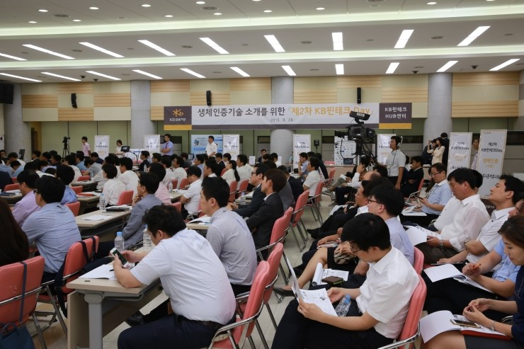

2015-8-27

KB금융그룹은 8월26일 KB국민은행 여의도본점 대강당에서 생체인증기술을 KB금융 계열사에 소개하기 위한 ‘제2차 KB핀테크 Day’행사를 개최했습니다.
스마트 인증분야를 주제로 지난 5월에 개최된 ‘제1차 KB핀테크 Day’에 이어 개최된 이번 ‘제2차 KB핀테크 Day’에서는 KB핀테크HUB센터가 지난 5개월간 접수한 생체인증 기술을 중심으로, 금융권 최초로 부스 시연을 겸한 설명회 형식으로 진행되었습니다.
현재 금융권은 금융당국이 금년 12월부터 비대면 실명확인 방안을 허용하면서 안면인식과 지문정보 등을 활용한 인증 도입방안에 대한 논의를 활발히 진행하고 있으며, 관련 업체들도 금융권과의 다양한 제휴를 모색하고 있습니다. 이런 분위기에 개최된 이번 행사에는 정맥, 홍채, 지문, 안면, 음성, 서명 등 6개 생체인증 분야 10개 업체가 참여하여 기술소개와 질의응답 및 시연을 통해 자사 인증기술의 우수성을 홍보할 수 있는 기회를 가졌습니다.
생체인증분야는 고가의 인식 장비 때문에 금융에서 상용화가 다소 제한적이었으나, 최근 일상적으로 사용하는 스마트폰의 카메라, 스피커, 마이크, 터치패드 기능을 통해 안면, 음성, 지문, 서명 인증이 추가 장비 없이 가능해짐으로써 빠른 성장이 기대되며 적극적인 대응방안을 모색할 시점입니다.
이번 행사에 참석한 KB금융 계열사의 한 직원은 “기술 시연 위주로 구성되어 이번 행사를 통해 생소했던 생체인증 분야를 이해하고, 계열사간 방향성을 공유할 수 있는 좋은 시간이었다”고 평가했습니다.
향후 ‘KB핀테크 Day’는 KB금융그룹과 핀테크 업체간 정기적인 행사로, 계열사가 원하는 기술을 신속하게 소개하는 가교역할을 충실히 수행할 계획입니다.